Soil Health and Management
Covers topics related to soil fertility, soil testing, nutrient management...
April 25, 2022
2 years ago
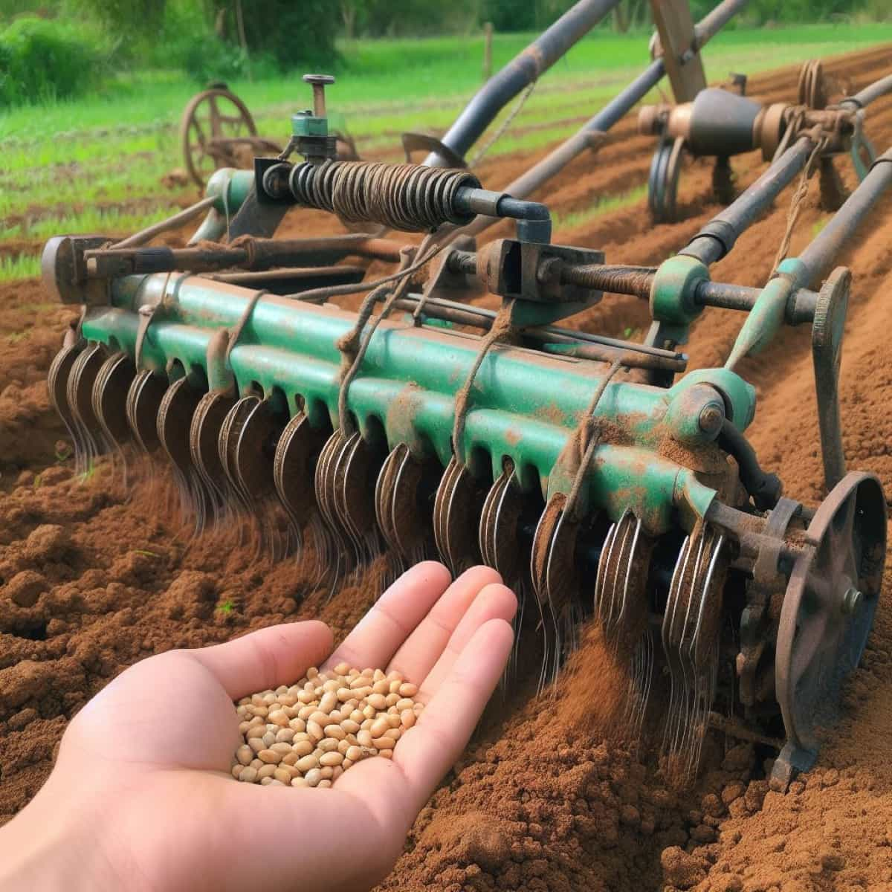
TechniquesUncover the significance of precise seed placement, optimal spacing, and appropriate depth in enhancing crop yields...
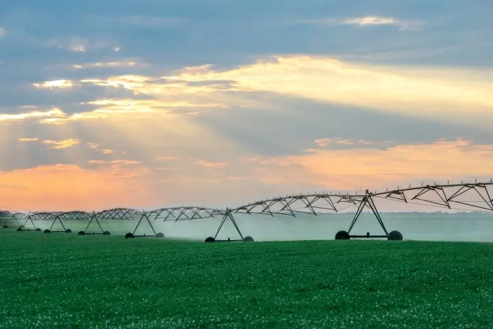
TechniquesLearn about the crucial role of precise watering methods, optimal distribution, and strategic timing...
Explore the dynamic interplay between climate change and agriculture...
 Sustainability
Sustainability
Explore different methods and techniques for sustainable agriculture...
 Techniques
Techniques
Discusses the importance of crop rotation in maintaining soil fertility...
Provides tips and advice on what crops to plant during different seasons...
Covers topics related to soil fertility, soil testing, nutrient management...
April 25, 2022
2 years ago
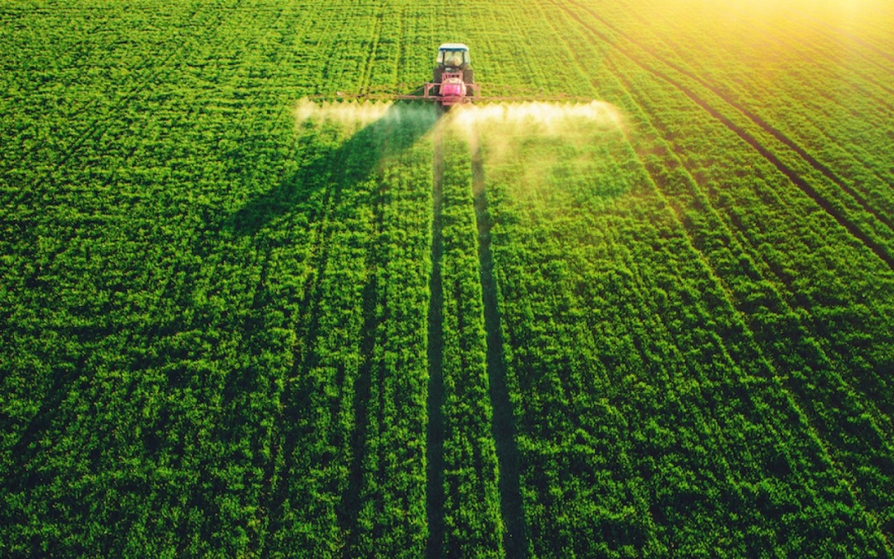
Explains the principles of IPM and how farmers can use a combination...
April 26, 2022
2 years ago
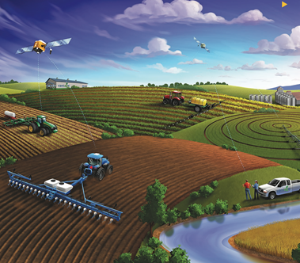
Explore the latest advancements in agricultural technology...
April 27, 2022
2 years ago
Discusses economic aspects of farming, including market trends...
April 28, 2022
2 years ago
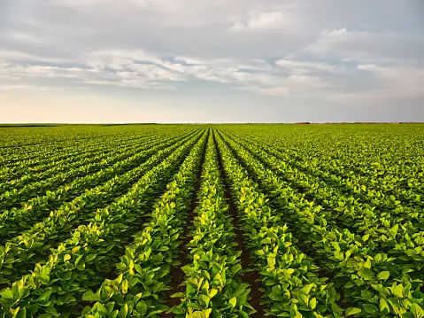
Provides guidance on raising and managing livestock...
April 29, 2022
2 years ago
Explore opportunities for farmers to diversify their income...
April 30, 2022
2 years ago
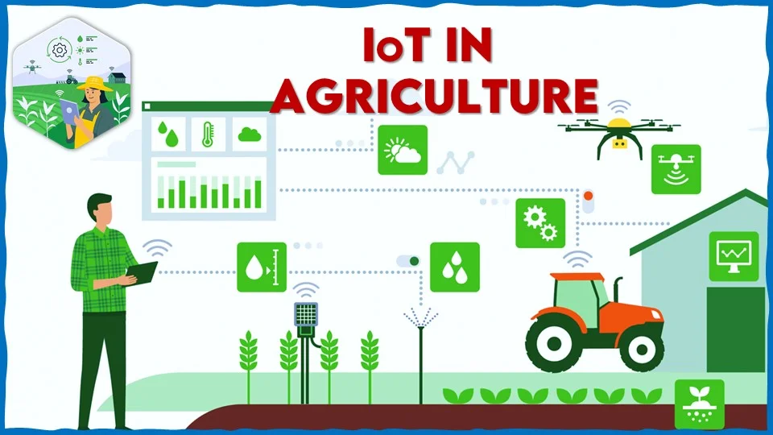
Have you heard about IoT in Agriculture? IoT means Internet of Things...
April 19, 2022
11 minutes ago
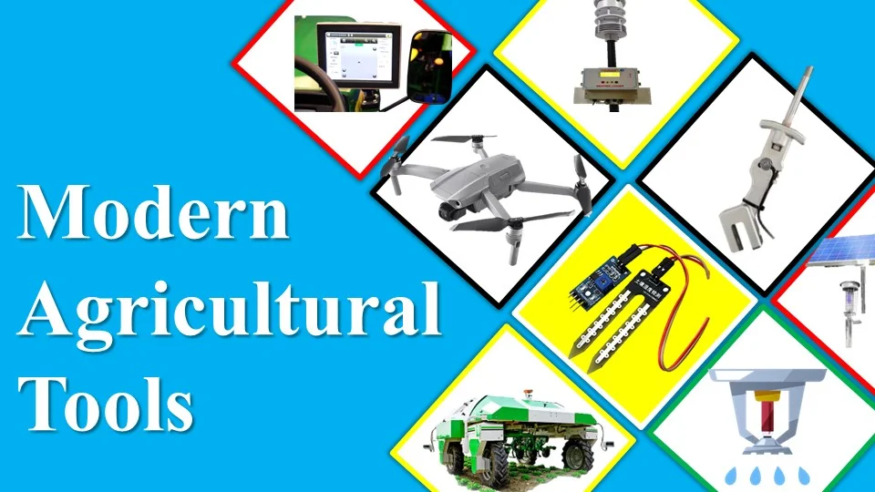
Modern agricultural tools refers to the involvement of technologies...
April 19, 2022
11 minutes ago
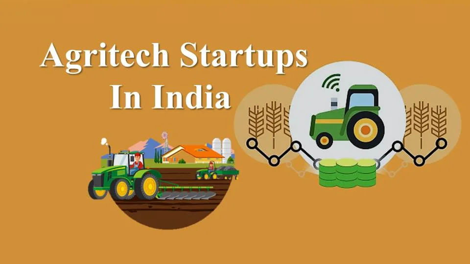
To boost the condition of Indian farmers and the situation of agriculture...
April 19, 2022
11 minutes ago
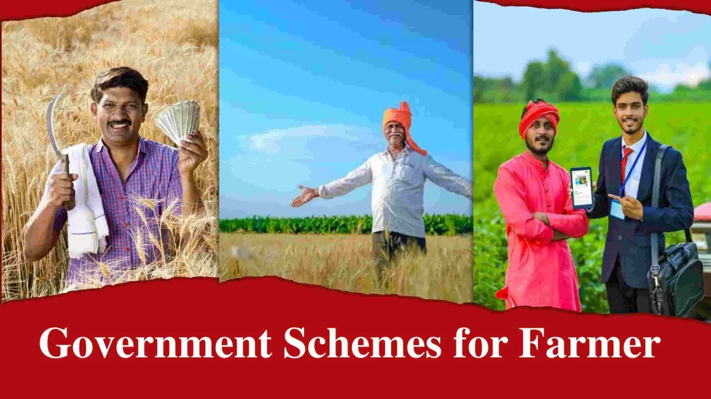
Government schemes for farmers are basically government approved...
April 19, 2022
11 minutes ago
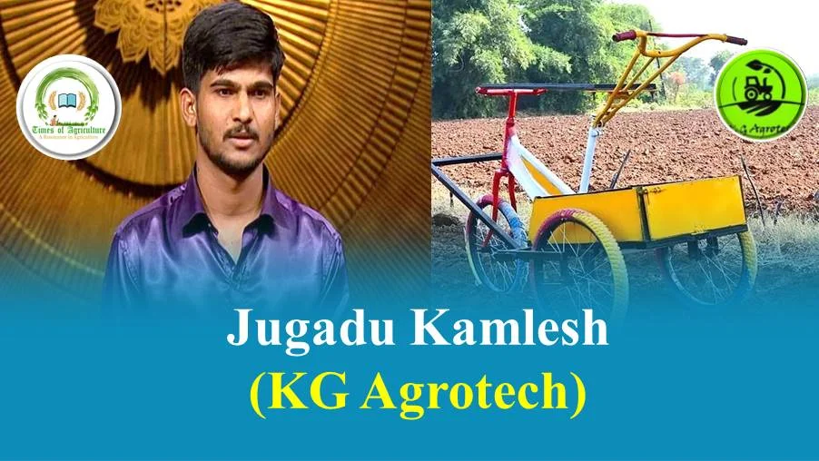
Kamlesh Nanasaheb Ghumare, aka "Jugadu Kamlesh"...
April 19, 2022
11 minutes ago
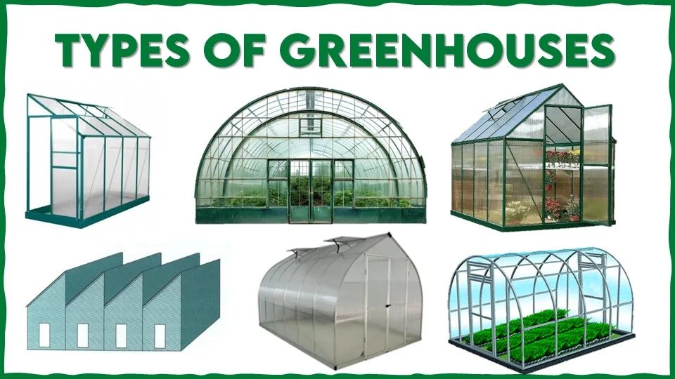
Greenhouses can be of different sizes, ranging from small backyard models...
April 19, 2022
11 minutes ago
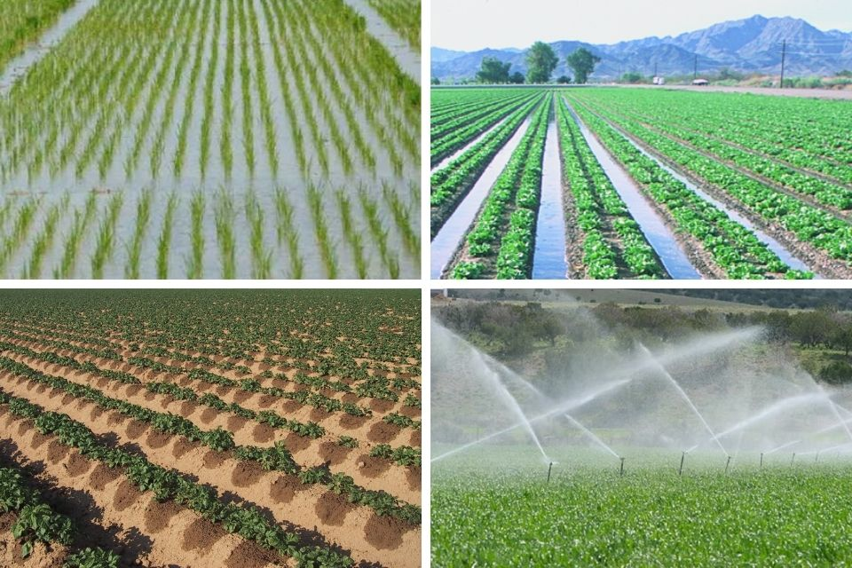
What's making them as top pesticides company in India?...
April 19, 2022
11 minutes ago
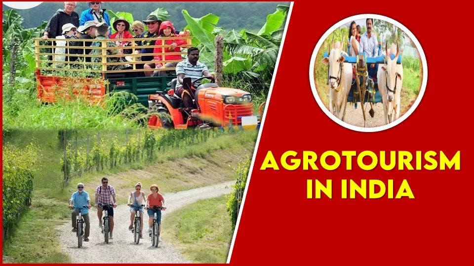
What is agrotourism? Here is the answer in one sentence...
April 19, 2022
11 minutes ago

Learn about integrated pest management and sustainable pest control methods...
May 1, 2022
2 years ago
Discover modern approaches to soil health and fertility management...
May 2, 2022
2 years ago
Explore how to diversify farm income through agricultural tourism...
May 3, 2022
2 years ago
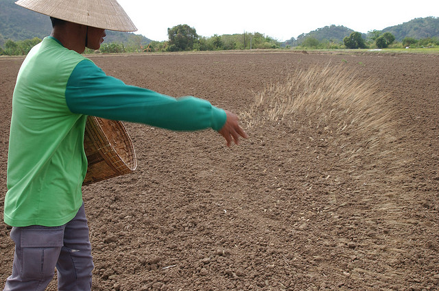
Understanding different planting methods and their applications...
May 4, 2022
2 years ago
Latest developments in irrigation technology and water management...
May 5, 2022
2 years ago
Emerging trends and technologies shaping the future of agriculture...
May 6, 2022
2 years ago
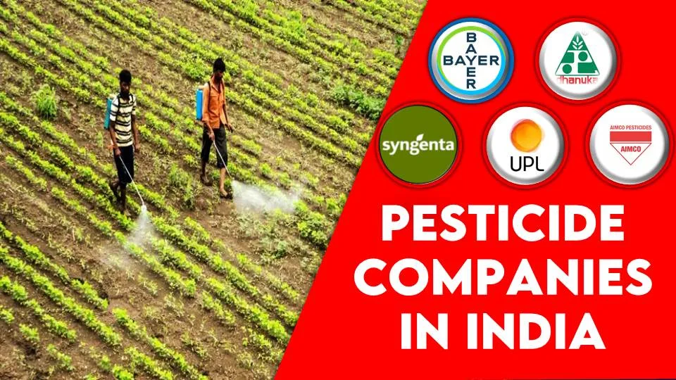
A comprehensive guide to leading agricultural pest management solutions...
May 7, 2022
2 years ago
Modern approaches to protecting crops from pests while maintaining ecological balance...
May 8, 2022
2 years ago
Comprehensive guide to implementing successful pest control strategies in agriculture...
May 9, 2022
2 years ago
Explore eco-friendly and sustainable approaches to managing agricultural pests while protecting the environment...
May 10, 2022
2 years ago
Modern technological solutions for precise and efficient pest management in large-scale farming...
May 11, 2022
2 years ago